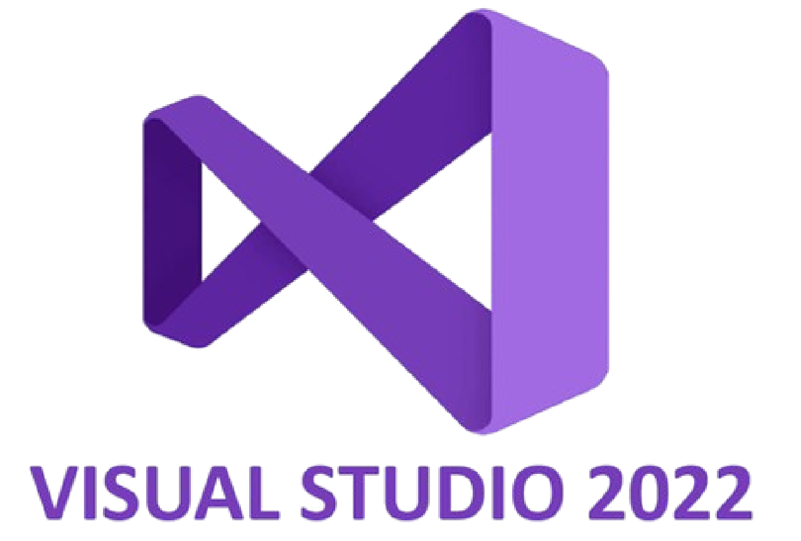
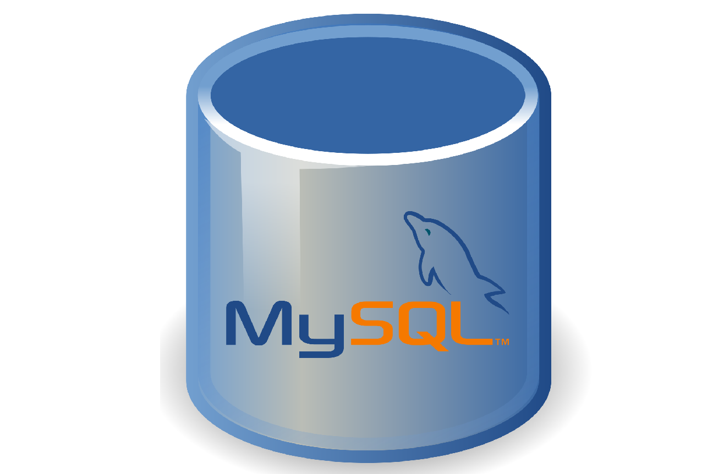

Technologies et Outils Utilisés
Framework Principal
.NET MAUI
Framework moderne de Microsoft pour applications mobiles multiplateformes :
- Développement Android/iOS avec un seul code C#
- Interface native performante
- Intégration avec les API système
- Déploiement rapide via Visual Studio
Environnement Technique

Visual Studio 2022
IDE complet pour le développement .NET :
- Débogage Android intégré
- Simulateur d'appareils
- IntelliSense pour XAML/C#
- Connexion GitHub intégrée

MySQL 8 – Système Centralisé
Une seule base de données est utilisée pour l'application web Laravel et l'application mobile .NET MAUI, permettant :
- Une cohérence des données sur toutes les plateformes
- Une structure normalisée et sécurisée
- Un accès simultané pour les managers (web) et les commerciaux (mobile)

Postman
Outil de test d'API REST :
- Validation des endpoints backend
- Simulation des appels mobile → serveur
- Tests avec authentification Laravel Sanctum